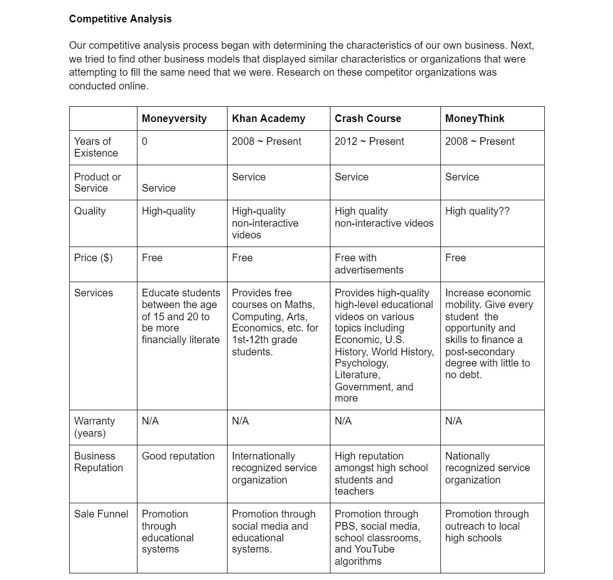
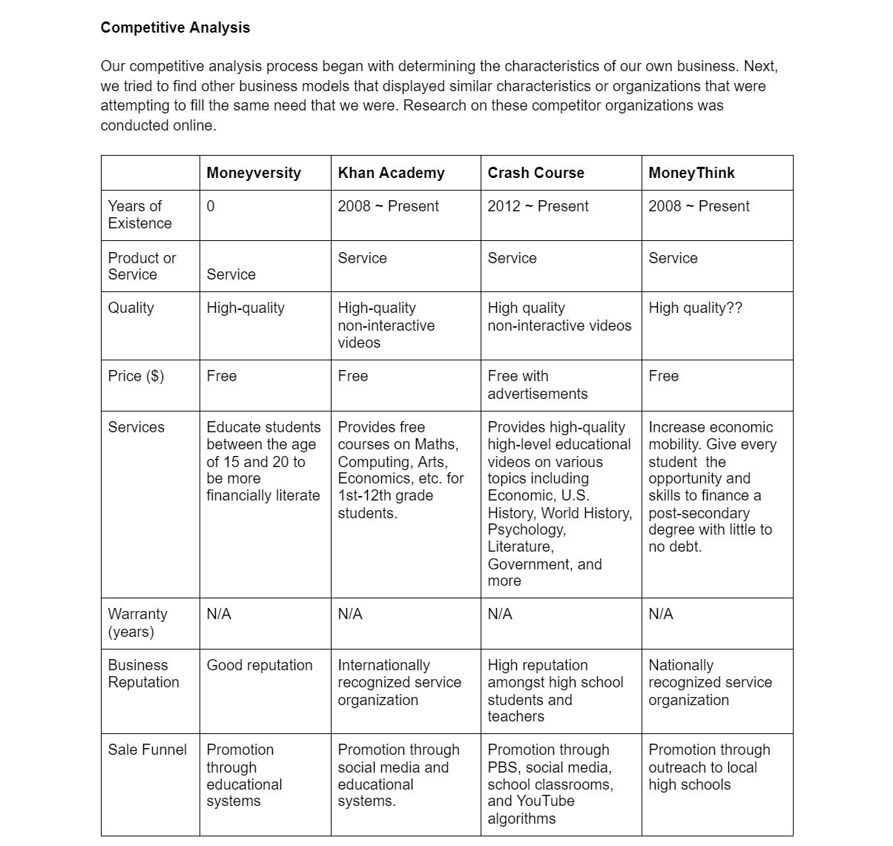

About

Nice to meet you - I'm Claire.
I'm an undergraduate student studying Business Administration and Human-Computer Interaction at Carnegie Mellon University. I'm passionate about incorporating inclusive design into business and education.I want to utilize user research and educational technology concepts to help businesses and institutions adapt technology to their users' needs.
Outside of school and work, I enjoy creating and expressing myself through a variety of outlets, from bullet journaling to experimenting in my kitchen. I'm currently in the process of perfecting an original Korean-Italian fusion pasta recipe!
Feel free to reach out to me at seoyounl@andrew.cmu.edu or find me on LinkedIn!
Projects
Moneyversity
Team: Anna Yuan, Jamie Park
Introduction
Moneyversity is a game-based learning platform that aims to help college-age young adults improve their financial literacy skills. The curriculum covers a wide range of topics from budgeting to investments. During the learning process, each student is paired up with a virtual character who is an alien exchange student needing to learn financial literacy in order to adjust to life on Earth. The student serves as the alien's financial advisor and helps their alien make smart financial decisions.
This was a semester-long project completed over Fall 2020 semester in The Role of Technology in 21st Century Learning, taught by Dr. Amy Ogan from Carnegie Mellon's HCI Institute.
My team members and I created this entire project ourselves from ideation to the final prototype, and we collaborated on all parts of the project.
Ideation
My teammates and I were tasked with creating an educational platform that addresses a societal need of our choice. We chose financial literacy because it is an issue that has a very tangible impact on the lives of young adults, but is often overlooked in formal education systems.
We began by defining our problem, building our user profile, and conducting competitor analyses. This helped us to narrow down the exact goals of our platform and laid the foundations for our user flow and preliminary user interviews.

 
Learner profile and competitive analysis

Learner profile and competitive analysis
 User flow
User flow
Preliminary User Testing
In total, we completed two rounds of user interviews. Our preliminary interview was aimed at informing our user flow and construction of the Moneyversity curriculum, while our second round of interviews was designed to identify opportunities for improvement in our interface and application of motivational theories.
Our first round user interview mainly consisted of content-related and learning style questions. Broadly, we wanted to know what topics in financial literacy our target users were most interested in learning, whether they had been taught these concepts before, whether they had any interest in learning about financial literacy, and their preferred methods of content delivery.

 Interview script and main findings
Interview script and main findings
Our preliminary user interviews gave us 3 main insights:
1. Users are unfamiliar with financial literacy but recognize its importance. 100% of our interviewees said they had never encountered financial literacy in a formal education context. However, they recognized that financial literacy is an important skill for their future and expressed interest in becoming more financially literate.
2. Our user base spans a wide range of financial literacy skill levels. The lack of formal education in financial literacy meant that our users' existing knowledge (if they knew anything at all) was from informal sources like relatives/guardians or online articles. Some of our users knew nothing, some knew the basics, while others probably knew more than us.
3. Users indicated an overwhelming preference for multimedia learning. Our interviewees said that they preferred to learn from interactive and visual online platforms. One user cited Khan Academy as an example.
Low/Mid-Fidelity Prototype
We used the insights gained from our preliminary user testing to create our first prototype, which ended up closer to a mid-fidelity prototype by the time we were done.

 Panels from our mid-fi prototype
Panels from our mid-fi prototype
We incorporated elements like multimedia learning, learning by teaching, and in-game rewards to increase motivation.
User Testing on Prototype
Our second round of user testing was focused on fine-tuning our mid-fidelity prototype and idenfitying opportunities for increased learner engagement and motivation.
We decided to take the users on a walkthrough of our prototype and allow them to give their own insights first, then asked a series of targeted questions aimed at measuring our platform's effectiveness.
We also incorporated a series of learning science principles that we covered in class.


Final Prototype
We added several new elements suggested by our test users, including a reference dictionary and a diagnostic quiz before each module so that users who are familiar with the concept can know to skip it entirely.
 Dashboard and learning progress
Dashboard and learning progress 
 Getting started
Getting started
 Learning content delivery
Learning content delivery
 Decision-making exercises and feedback
Decision-making exercises and feedbackClassInSight
Team: Franceska Xhakaj, Katrina Hu, Amy Luo
advised by Dr. Amy Ogan
Introduction
ClassInSight is a project that investigates how smart classrooms can sense in-class activities and provide feedback and training to novice instructors at the college and university level. Currently, the project focuses on helping instructors improve their in-classroom discursive practices, such as asking more content-based questions increase student participation and engagement.
I began working with the ClassInSight team in Fall 2020, after the preliminary classroom data collection and user interviews had taken place. My role in this project was to derive insights from the consolidated data and creating informed prototype designs of the final ClassInSight user dashboard.
Data Analysis

We began by doing a thematic analysis of the interviews conducted with the instructors. In the interviews, instructors were shown their nonverbal classroom behavior data, which included data on their relative location within the classroom and their gaze distribution (% of time that they spent looking at students, their device, the board, etc.). These interviews prompted teachers to discuss their assessment of the data, other data that they would like to see, and their goals for improving their nonverbal behaviors in the classroom.
Through our data analysis, we found 4 main insights:
1. Teachers are interested in classroom data regarding both their own behaviors as well as those of their students. They want to understand and explore the link between classroom data and classroom performance.
2. Teachers expressed a desire to improve their nonverbal classroom behaviors. Providing teachers with better resources and insights is a crucial step in identifying opportunities to improve the educational experience for both the teacher and the student.
3. There are technological, physical, and social barriers that prevent change in the classroom. Being aware of these obstacles (such as classroom size, furniture, device setup) allows us to tailor our solutions to address each individual teacher's unique classroom challenges.
4. There's a tradeoff between time and training. We have to find the balance between effective and feasible solutions for behavior change.
Prototyping
With these conclusions in mind, our team began our prototyping phase. We started out by making sketches of potential dashboard elements based on our user interview insights.


This project is still ongoing. I'll be updating on our progress as our team continues working!